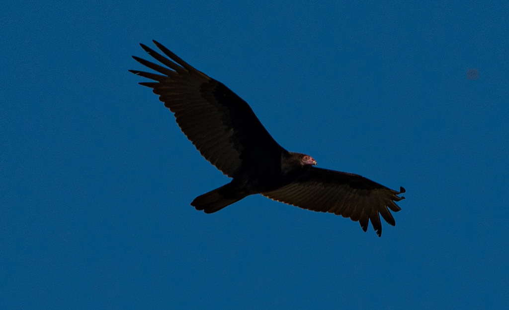

Cathartes aura
Cathartidae
📷 Photo by Rob Carr · CC-BY-NC · via iNaturalist · 📅 Nov 14, 2025
Quick Hits
- The large, dark bird soaring overhead in lazy circles with its wings held in a slight V — rocking side to side without flapping — is almost certainly a turkey vulture.
- It finds carrion primarily by smell, one of the very few birds that can — its sense of smell is powerful enough to detect a carcass hidden under a forest canopy.
- The bare red head is not decorative; it is hygienic — featherless skin is easier to keep clean when you eat by plunging your head into a carcass.
- Despite their association with death, vultures are essential sanitation workers, cleaning up carrion that would otherwise spread disease.
How to Spot It
Flight
Large dark bird soaring with wings in a shallow V (dihedral), rocking side to side. Rarely flaps.
Underwing
Two-toned: dark leading edge, silvery-gray flight feathers.
Head
Small, bare, red (adult) — visible at close range.
Size
Wingspan about 6 feet.
Voice
Essentially voiceless — lacks the vocal anatomy of most birds. Hisses and grunts when disturbed.
What to Look For
A large dark bird soaring in circles with wings held in a V and a distinctive side-to-side rocking. Up close, the small bare red head is unmistakable.
What It Eats
Carrion exclusively. Does not kill live prey.
Where & When
Where in the park
Look up — almost any time you see a large bird circling overhead without flapping, it is a turkey vulture.
When to see it
Year-round resident, visible overhead on any warm day.
Watching It Respectfully
Observe and enjoy.
Photo Credits
- © Rob Carr (CC-BY-NC), via iNaturalist